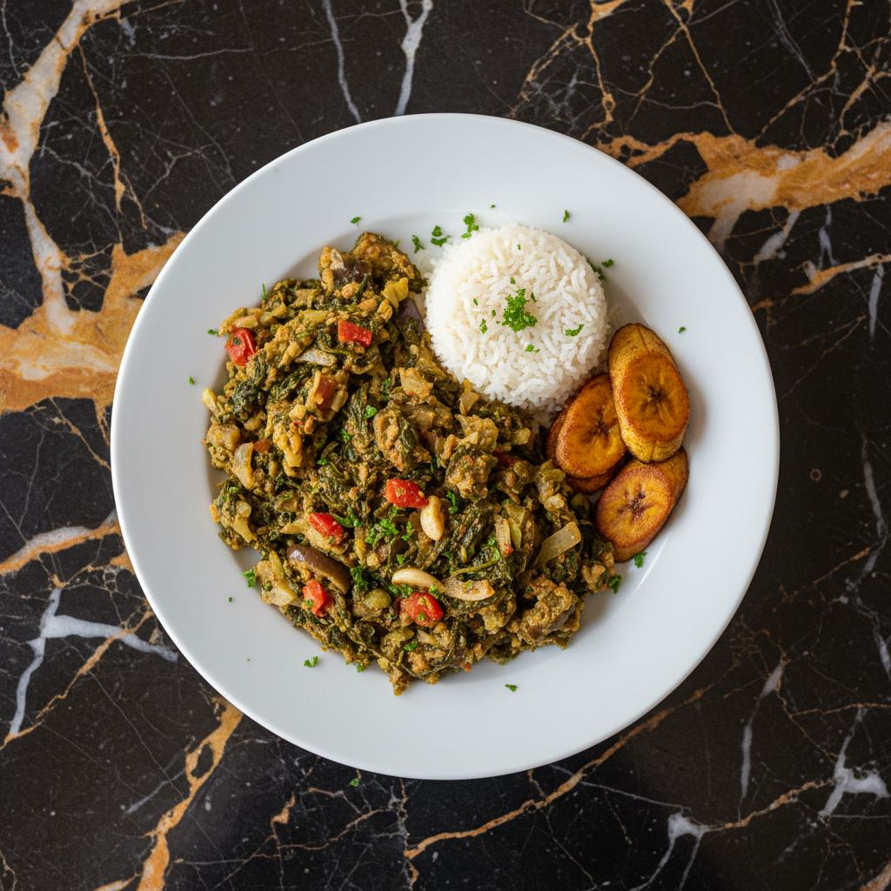

West Africa
Famous for bold flavours, rich stews, groundnuts and delicious Jollof rice.
Explore RegionA JOURNEY THROUGH AFRICAN CUISINE
From the spicy kitchens of West Africa to the aromatic dishes of East Africa, discover the stories, traditions and flavours behind every meal.
Explore RecipesAfrican cuisine is a beautiful expression of culture, history and community. Every dish tells a story, bringing together traditional ingredients, unique cooking techniques and generations of knowledge.
Discover the magic of traditional spices, local ingredients and the people who keep African food traditions alive.
Explore the beauty and diversity of African cooking.
Taste the diversity of Africa through its most loved traditional meals.

A delicious West African rice dish cooked with tomatoes, peppers and spices.
Discover Recipe
A traditional Ethiopian flatbread served with colourful stews.
Discover Recipe
A slow-cooked dish filled with aromatic spices, vegetables and tender meat.
Discover Recipe
A popular Rwandan dish made with cassava leaves, often served with beans or other traditional sides.
Discover RecipeEvery region has its own unique food traditions. Discover what makes each one special.
Famous for bold flavours, rich stews, groundnuts and delicious Jollof rice.
Explore RegionKnown for dishes like Injera, Ugali, Isombe and traditional spices.
Explore RegionCelebrated for aromatic spices, couscous, tagines and Mediterranean influences.
Explore RegionAfrican dishes are gaining recognition around the world, introducing new audiences to traditional flavours and ingredients.
Ingredients such as cassava, millet, sorghum and local vegetables continue to inspire modern African cooking.
Food creators are sharing African recipes and cooking traditions with audiences through digital platforms.